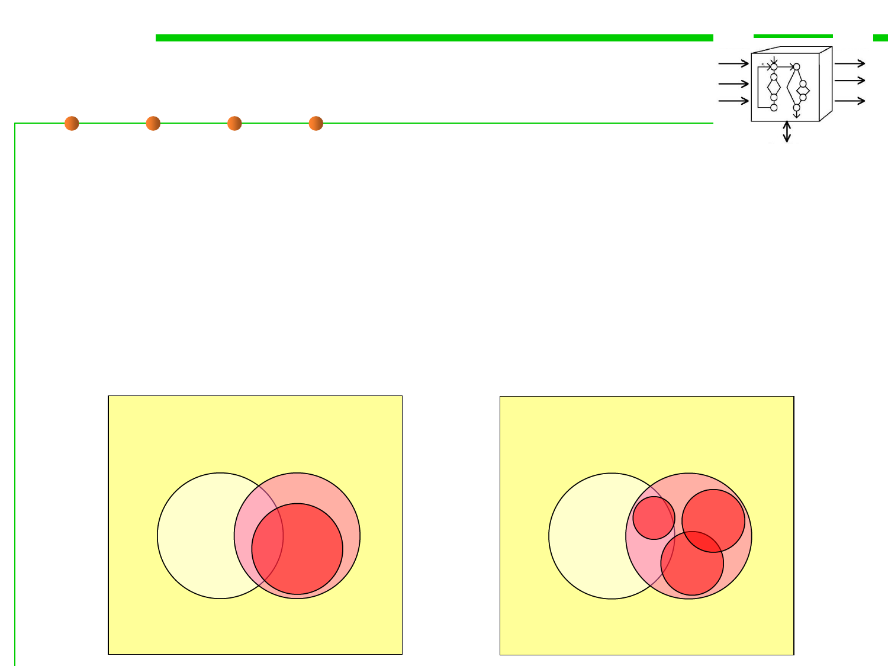

White-box testing
7.5 Testing and Test-First Programming
▪ In white-box testing an internal perspective of the system, as well as
programming skills, are used to design test cases.
▪ The tester chooses inputs to exercise paths through the code and
determine the appropriate outputs.
▪ White-box testing can be applied at the unit, integration and system
levels of the software testing process. In general, it is performed early
in the testing process.
Spec.
Program
Spec.
Program
Test Case
Test Cases